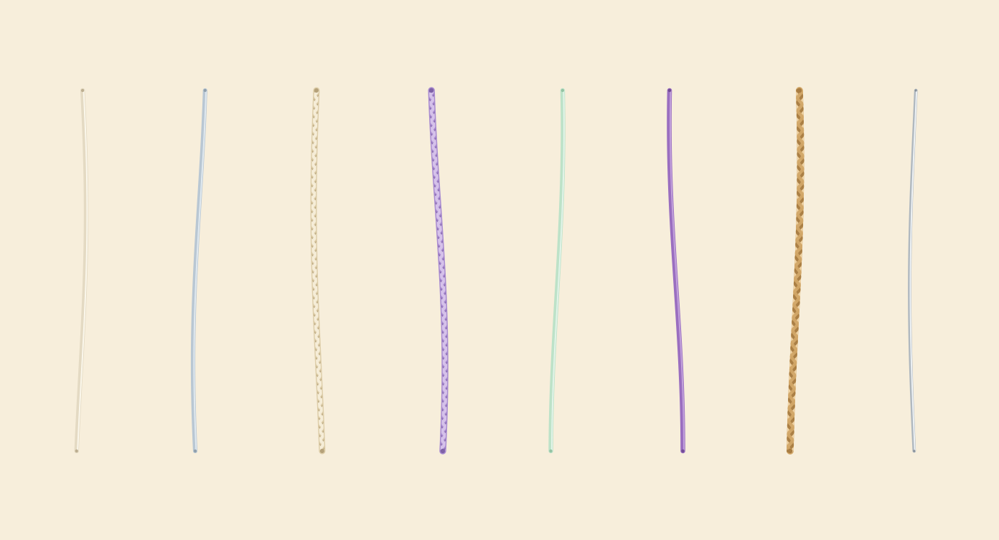

Reference
Materials, and what they are for
A suture is three decisions in one packet: what the thread is made of, how it is built, and what needle is swaged onto it. Get the thread wrong and the repair fails slowly; get the needle wrong and it fails in your hand.

Absorbable or non-absorbable?
Ask how long the tissue needs support. If it has regained its own strength by then, an absorbable thread is kinder — no second procedure, no retained foreign material. If it has not, the thread must stay.
- Absorbable
- Vicryl, Monocryl, PDS, gut. Strength is lost over weeks; the thread is then broken down and disappears.
- Non-absorbable
- Nylon, polypropylene, silk, steel. The thread keeps its strength; skin sutures are removed, deep ones stay for life.
Monofilament or braided?
Structure decides handling and infection risk, and it decides how the knot behaves.
- Monofilament
- Smooth, passes easily, low infection risk. Stiff with memory, so knots slip — 3–4 throws.
- Braided
- Soft, ties securely, the best handling. Drags through tissue and can harbour bacteria in its interstices.
The eight materials
Strength retention figures are approximate and vary with the product, the tissue and the patient.
Compare at a glance
Times are approximate. Always check the product label before use.
Which material with which stitch
“Typical” is what a practice would usually stock for that technique and species; “possible” is defensible in the right animal; the rest are rarely used. Click a technique to watch it.
Needles
Sizes you will actually use
| Size | Typical use |
|---|---|
| 1 – 2 | Linea alba and body wall in a horse, heavy tension lines, tendon repair |
| 2-0 – 3-0 | Dog skin and body wall, stomach, bladder, equine bowel |
| 4-0 | Cat skin, small bowel in dogs and cats, vessels |
| 5-0 – 6-0 | Eyelids, ears, digits, fine mucosal work |
| 7-0 and finer | Microsurgery, nerve and vessel repair |
The number of zeros is the diameter: more zeros, finer thread. Choose the finest thread that will hold the tissue.